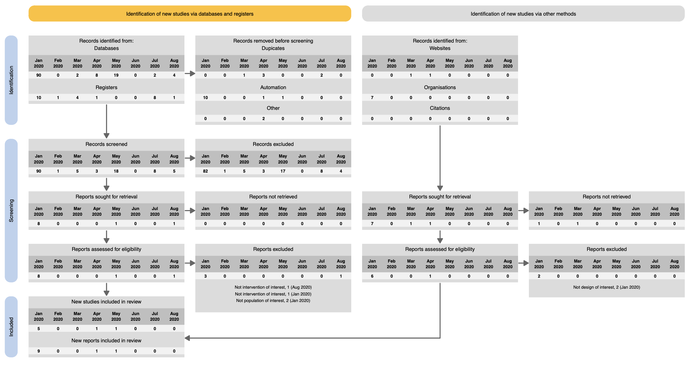
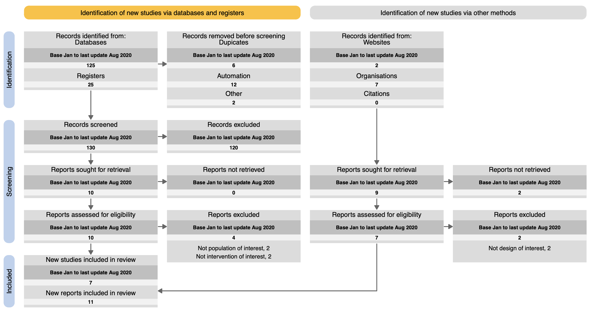
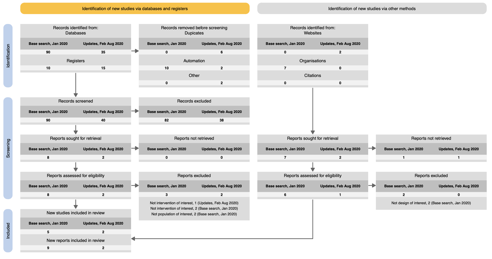
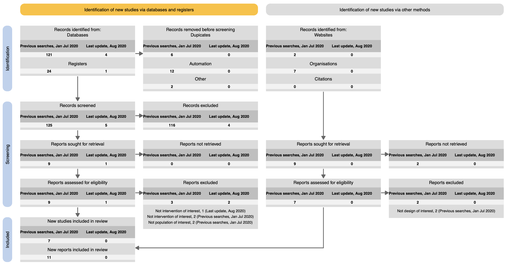

Living systematic reviews are a relatively novel concept - rigorous systematic reviews are kept up-to-date by incrementally repeating searches, screening, data extraction, critical appraisal, and synthesis at regular intervals. The review reports are updated and relevant new evidence is included almost as soon as it becomes available.
To date, there has been no guidance and no standardised means to report the flow of evidence through a living systematic review. Following an extensive and comprehensive assessment of living systematic reviews, we have produced 4 standardised ways to report living systematic reviews in flow diagram form. The forms are based on the PRISMA 2020 update, but with an important addition - living systematic review authors can now visualise their base (i.e. original) review and updates in one of 4 recommended ways.
See the example flow diagramsFour approaches are summarised below:
Approach 1: Base review and each update separately
Approach 2: Combined base and update
Approach 3: Base review separately and combined updates
Approach 4: Base review and updates combined, latest update separate
You can read more about each one by clicking on the relevant labels to the left and right:
The base (original) review and each of the incremental updates is shown separately as a table of data within each box in the flow diagram.
The base (original) review all incremental updates are combined within a single value in each box in the flow diagram.
The base (original) review is separated from all updates, which are summed together in a two-column table in each box in the flow diagram.
The base (original) review is combined with all updates apart from the latest one, which is separated in a two-table column in each box in the flow diagram
